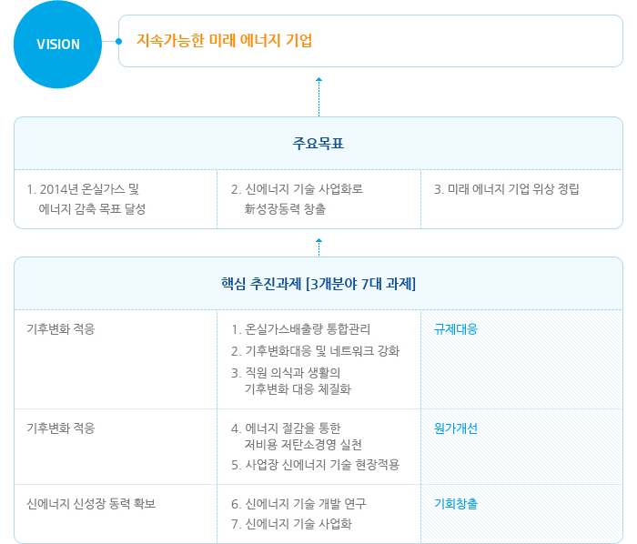

저탄소경영체제
기후변화 경영조직
KOGAS의 저탄소경영전략은 2단계 심의를 거쳐 결정되고 추진됩니다. 실무부서장으로 구성된 기후변화/에너지 실무위원회가 저탄소경영과 관련한 현안을 심의한 후, 임원들로 구성된 의사결정기구인 기후변화 에너지위원회가 전략을 최종 수립하고 기후변화대응 중요사안을 심의하고 있습니다.
저탄소경영 전략
KOGAS는 '지속가능한 미래 에너지 기업'이라는 비전을 가지고 온실가스 및 에너지 감축목표 달성, 신에너지기술 사업화로 신성장동력 창출, 미래에너지기업 위상 정립이라는 목표를 이루고자 노력하고 있습니다.
이를 위해 저탄소경영 5개년 계획을 수립하여 ’기후변화적응‘, ’에너지저감‘ 및 ’신에너지 신성장동력 확보‘라는 3대 분야에서 7대 과제, 52개 실천 아이템을 선정하여 추진하고 있습니다.

VISION - 지속가능한 미래 에너지 기업
- 주요목표
-
- 1. 2014년 온실가스 및 에너지 감축 목표 달성
- 2. 신에너지 기술 사업화로 新성장동력 창출
- 3. 미래 에너지 기업 위상 정립
- 핵심 추진과제 [3개분야 7대 과제]
- 기후변화 적응
- 1. 온실가스배출량 통합관리
- 2. 기후변화대응 및 네트워크 강화
- 3. 직원 의식과 생활의 기후변화 대응 체질화
규제대응
- 에너지 저감
- 4. 에너지 절감을 통한 저비용 저탄소경영 실천
- 5. 사업장 신에너지 기술 현장적용
원가개선
- 신에너지 신성장 동력 확보
- 6. 신에너지 기술 개발 연구
- 7. 신에너지 기술 사업화
기회창출